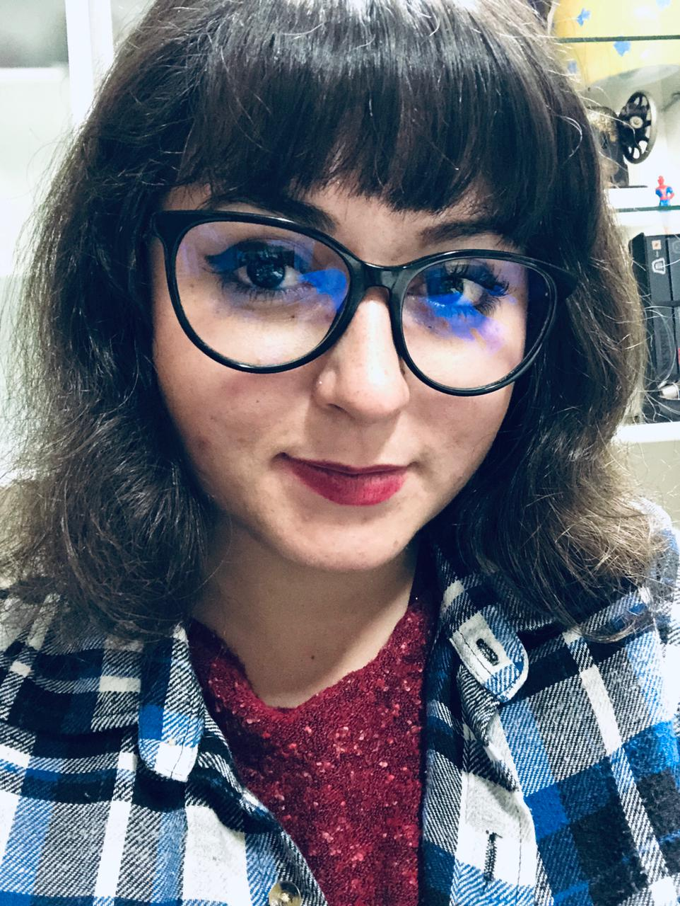

Beatriz Khey Andrade Santos |
|
Resumo informado pelo autorGraduanda em Bacharelado em Engenharia de Software pela PUCPR. |
|
Dados Pessoais |
|
|
Nascimento CPF |
20/10/1997 101.008.859-93 |
Formação acadêmica/titulação |
|
|
2022 |
Bacharel em Engenharia de Software PUCPR - Pontifícia Universidade Católica do Paraná |
|
2016 - 2018 |
Bacharel em Matemática UFSC - Universidade Federal de Santa Catarina |
|
2012 - 2015 |
Técnico em Administração Integrado ao Ensino Médio TECPUCPR – Centro de Educação Profissional Irmão Mário Cristóvão |
|
2012 - 2015 |
Influx - Curitiba Paraná Inglês Avançado – 5 semestres |
Atuação Profissional |
|
Programa de Educação Tutorial da Matemática UFSC - Universidade Federal de Santa Catarina2017 - 2018 Outras informações: Coordenação, aplicação e correção da Olimpíada Regional de Matemática de Santa Catarina, organização da cerimônia de encerramento da ORM/SC, organização da FERMAT (Feira Redescobrindo a Matemática, no Colégio Aplicação), redação e aplicação de treinamentos de matemática para alunos do ensino fundamental, seleção de novos bolsistas para o PET, participação no SULPET (Encontro Regional dos Grupos PET do Sul do Brasil), entre outras atividades administrativas. |
|
Tribunal de Contas do Estado do Paraná2014 - 2015 Outras informações: Envio de ofícios, arquivamento de ofícios e processos, relatórios quinzenais no Excel. |
|